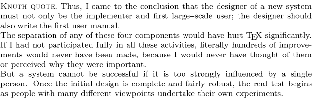
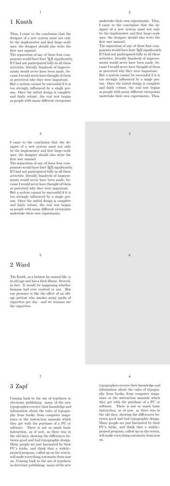
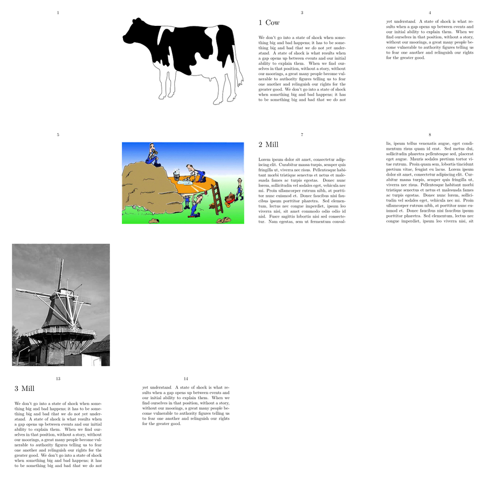
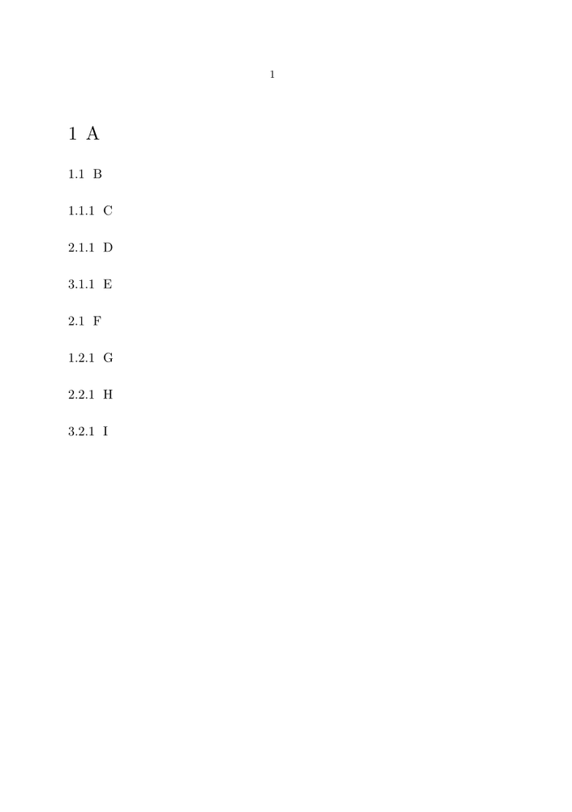
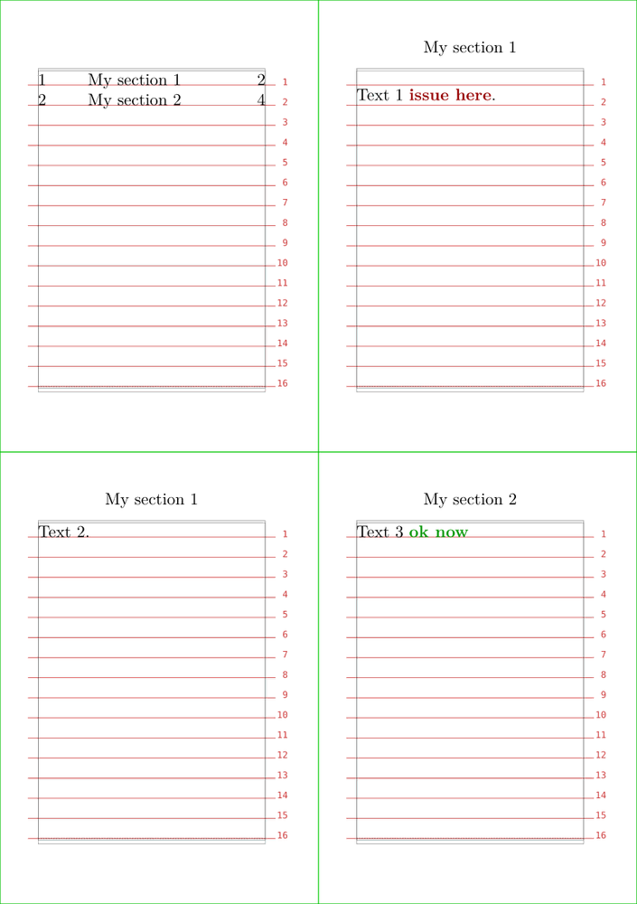
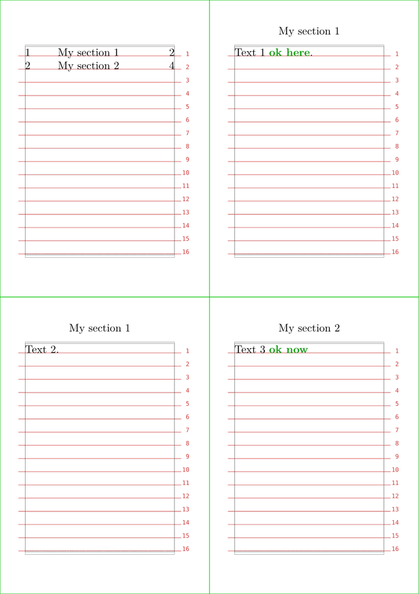

Contents
-
1
\setuphead
- 1.1 Summary
- 1.2 Settings
- 1.3 Description
-
1.4
Examples
- 1.4.1 First example
- 1.4.2 Big space before a smaller space behind the heading
- 1.4.3 Setting label of a new section head
- 1.4.4 Inline headings similar to LaTeX’s \paragraph{}
- 1.4.5 Setting label of a part
- 1.4.6 Example of hidden sections
- 1.4.7 Modifying the page before a chapter
- 1.4.8 Special facing pages for chapters
- 1.4.9 Different order of number elements
- 1.4.10 Leading zeros in section numbers
- 1.4.11 For placehead=empty, but without stange vertical spacing thanks to after=,
- 1.4.12 For placehead=hidden, but maintain TOC registering with \synchronizehead{section}
- 1.5 Notes
- 1.6 See also
- 1.7 Help from ConTeXt-Mailinglist/Forum
Summary
Settings
| \setuphead[...,...][...=...,...] | |
| [...,...] | section |
| frontpartlabel | name |
| bodypartlabel | name |
| appendixlabel | name |
| backpartlabel | name |
| expansion | yes no xml |
| catcodes | name |
| sectionresetset | name |
| sectionseparatorset | name |
| sectionconversionset | name |
| conversion | name |
| sectionstarter | command processor->command |
| sectionstopper | command processor->command |
| sectionset | name |
| sectionsegments | number number:number number:* number:all section section:section section:* section:all current |
| referenceprefix | + - text |
| style | style command |
| color | color |
| textstyle | style command |
| textcolor | color |
| numberstyle | style command |
| numbercolor | color |
| coupling | section |
| ownnumber | yes no |
| beforesection | command |
| aftersection | command |
| insidesection | command |
| incrementnumber | yes no list empty |
| placehead | yes no hidden empty section |
| number | yes no |
| page | see \page |
| marking | page reset |
| header | start stop high none normal empty nomarking name |
| text | start stop high none normal empty nomarking name |
| footer | start stop high none normal empty nomarking name |
| before | command |
| after | command |
| inbetween | command |
| continue | yes no |
| aligntitle | yes no float |
| interlinespace | name |
| interaction | list reference |
| internalgrid | name |
| grid | normal standard yes strict tolerant top bottom both broad fit first last high one low none line strut box min max middle math math:line math:halfline math:-line math:-halfline name |
| align | see \setupalign |
| tolerance | see \setuptolerance |
| strut | yes no |
| hang | line broad fit none number |
| margin | dimension |
| indentnext | yes no auto |
| alternative | text paragraph normal margin inmargin top middle bottom reverse margintext name |
| width | dimension |
| numberwidth | dimension |
| textwidth | dimension |
| distance | dimension |
| textdistance | dimension |
| commandbefore | command |
| commandafter | command |
| command | twoarguments |
| textcommand | oneargument |
| deeptextcommand | oneargument |
| numbercommand | oneargument |
| deepnumbercommand | oneargument |
| location | name |
| criterium | strict positive all |
| hidenumber | yes no |
| Option | Explanation | ||||||||||
|---|---|---|---|---|---|---|---|---|---|---|---|
| Section level, e.g. chapter, section, subsection or number (1=part, 2=chapter). Can be a list. | |||||||||||
| frontpartlabel |
|
||||||||||
| bodypartlabel |
|
||||||||||
| appendixlabel |
|
||||||||||
| backpartlabel |
|
||||||||||
| expansion |
|
||||||||||
| sectionresetset |
|
||||||||||
| sectionseparatorset |
|
||||||||||
| sectionconversionset |
|
||||||||||
| conversion |
|
||||||||||
| sectionset |
|
||||||||||
| sectionsegments |
|
||||||||||
| style |
|
||||||||||
| color |
|
||||||||||
| textstyle |
|
||||||||||
| textcolor |
|
||||||||||
| numberstyle |
|
||||||||||
| numbercolor |
|
||||||||||
| ownnumber |
|
||||||||||
| beforesection |
|
||||||||||
| aftersection |
|
||||||||||
| number |
|
||||||||||
| page |
|
||||||||||
| header |
|
||||||||||
| footer |
|
||||||||||
| before |
|
||||||||||
| after |
|
||||||||||
| continue |
|
||||||||||
| aligntitle |
|
||||||||||
| interlinespace |
|
||||||||||
| interaction |
|
||||||||||
| grid |
|
||||||||||
| align |
|
||||||||||
| tolerance |
|
||||||||||
| strut |
|
||||||||||
| hang |
|
||||||||||
| indentnext |
|
||||||||||
| width |
|
||||||||||
| numberwidth |
|
||||||||||
| textwidth |
|
||||||||||
| command |
|
||||||||||
| textcommand |
|
||||||||||
| deeptextcommand |
|
||||||||||
| numbercommand |
|
||||||||||
| deepnumbercommand |
|
||||||||||
Description
These data can be processed for typesetting :
- add a dot between the text and the number,
- add a generic text before the "pure text"
- appearance can be different for the text if we use it in the headers / footers, or in the Table of Content.
- add vertical spaces before or after the text
- add rules before or after the whole section under the heading
- select if the title should appear on a right or a left page.
Examples
First example
-
\setuppapersize[A5] \setuplabeltext[chapter=CHAPTER~] \setuphead[chapter][ header=empty, alternative=middle, style=bold, numbercommand=\groupedcommand{}{\blank[2cm]}, after={\blank[3cm]}, ] \starttext \chapter{Title of chapter} The first paragraph begins 3 cm below the title. In this chapter, we will discuss... \stoptext
Big space before a smaller space behind the heading
-
\setuphead [subject] [before={\blank[2*big]}, after={\blank[big]}, style=bold] \starttext \subject{Headline 1} text text text text text text text text text text text text text text text vtext text text text text text text text text text text text text\par \subject{Headline 2} text text text text text text text text text text text text text text text vtext text text text text text text text text text text text text\par \stoptext
Setting label of a new section head
-
\definehead [mychapter] [chapter] [bodypartlabel=mychapter] \setuplabeltext[en][mychapter=My Chapter~] \starttext \mychapter{Animals} \stoptext
Inline headings similar to LaTeX’s
\paragraph{}
Modified from (https://tex.stackexchange.com/questions/375922/paragraph-title-in-context-similar-to-latex-paragraph).
-
\definehead[paragraph][subsubsubsubject] \setuphead [paragraph] [ textdistance=0pt, commandafter={.}, alternative=text, style=sc, ] \startparagraph[title=Knuth quote] \input knuth \stopparagraph
- 
Setting label of a part
If you want parts to be labeled as "Part 1" etc., add bodypartlabel=part:
-
\setuphead [part] [placehead=yes, bodypartlabel=part] \starttext \part{A part} \stoptext
-
\setupheadnumber[section] [8] \setupheadnumber[subsection] [3] \setupheadnumber[subsubsection][5] \setuphead[section,subsection][placehead=hidden] \setuphead[subsubsection] [placehead=yes] \starttext \section{} % hidden 8th section \subsection{} % hidden 3rd section \subsubsection{This is complete numbering of subsubsection} % view 9.4.6 subsubsection \stoptext
Modifying the page before a chapter
Here is an example which shows how you can change the background color of an empty page before the chapter title.
-
% next five lines just to show the effect on this wiki \definepapersize[sheet] [width=104mm,height=296mm] \setuppapersize[A8][sheet] \setuppaper[nx=2, ny=4] \setuplayout[page][location=middle, marking=on] \setuparranging [XY] \setupbodyfont[6pt] % actual example starts here \setuppagenumbering [alternative=doublesided] \startsetups [chapter:before] \doifoddpageelse {} {\pushbackground[page] \setupbackgrounds[page][background=color,backgroundcolor=gray] \page[right] \popbackground} \stopsetups \setuphead [chapter] [page=yes, before=\directsetup{chapter:before}] \starttext \startchapter[title={Knuth}] \dorecurse{3}{\samplefile{knuth}} \stopchapter \startchapter[title={Ward}] \dorecurse{1}{\samplefile{ward}} \stopchapter \startchapter[title={Zapf}] \dorecurse{2}{\samplefile{zapf}} \stopchapter \stoptext
- 
The command \pushbackground stores the values of the background which is modified. After the execution of \page[right] the old values of background are restored by \popbackground.
Special facing pages for chapters
On March 7, 2022, Julian asked on the mailing list about some method to place an image on the facing page of each chapter in a (double-sided) book. Chapters might also end on an even (equivalently, left) page, in which case, an empty right (odd) page should be introduced after so that the next chapter still has its image on its facing (left) page. (https://www.mail-archive.com/ntg-context@ntg.nl/msg101455.html)
In the discussion that ensued, Wolfgang posted the following elegant solution using \definepageinjection [slightly re-formatted from (https://www.mail-archive.com/ntg-context@ntg.nl/msg101462.html)] —
-
% to render examples in the wiki \definepapersize[sheet][width=24cm,height=24cm] \definepapersize[page][width=6cm,height=6cm] \setuppapersize[page][sheet] \setuppaper[nx=4, ny=4] \setuparranging [XY] \setupbodyfont[6pt] % actual example starts here \setupexternalfigures [location=default] \setuppagenumbering [alternative=doublesided] \definepageinjection [chapter:start] [empty] [page=left] \definepageinjection [chapter:insert] [previouspage] [pagestate=stop,width=\paperwidth] \setuphead [chapter] [beforesection={\pageinjection[chapter:start]}, insidesection={\pageinjection[chapter:insert][name=\structureuservariable{image}]}] \starttext \startchapter [title={Cow}] [image=cow] \dorecurse{2}{\samplefile{klein}} \stopchapter \startchapter [title={Mill}] [image=hacker] \dorecurse{4}{\samplefile{lorem}} \stopchapter \startchapter [title={Mill}] [image=mill] \dorecurse{2}{\samplefile{klein}} \stopchapter \stoptext
- 
The source code is in page-inj.mklx.
Different order of number elements
You need a new prefix-set to rearrange the order of the section numbers:
-
\defineprefixset [reverse-section] [section,chapter] [] \defineprefixset [reverse-subsection] [subsection,section,chapter] [] \setuphead[section][sectionset=reverse-section] \setuphead[subsection][sectionset=reverse-subsection] \starttext \startchapter [title={A}] \startsection [title={B}] \startsubsection [title={C}] \stopsubsection \startsubsection [title={D}] \stopsubsection \startsubsection [title={E}] \stopsubsection \stopsection \startsection [title={F}] \startsubsection [title={G}] \stopsubsection \startsubsection [title={H}] \stopsubsection \startsubsection [title={I}] \stopsubsection \stopsection \stopchapter \stoptext
- 
(Example by Wolfgang Schuster on 2023-01-01)
Leading zeros in section numbers
You can create your own conversion format:
-
\startluacode interfaces.implement { name = "FourDigits", public = true, arguments = "string", actions = function(s) context("%04d",tonumber(s)) end } \stopluacode \defineconversion [FourDigits] [\FourDigits] \setuphead [chapter] [conversion=FourDigits] \starttext \startchapter [title={Chapter}] \stopchapter \stoptext
(Example by Wolfgang Schuster on 2023-01-01)
For placehead=empty, but without stange vertical spacing thanks to
after=,
-
\definepapersize[sheet] [width=148mm,height=210mm] \setuppapersize[A7][sheet] \setuppaper[nx=2,ny=2] \setuparranging[XY] \showframe[edge] \showgrid \setupbodyfont[11pt] \setuphead [section] [placehead=empty, page=yes,] \setupheadertexts[section] \starttext \placecontent\page \startsection[title={My section 1}] Text 1 \color[darkred]{\bf issue here}. \page Text 2. \stopsection \setuphead [section] [after=,] % THE SOLUTION IS HERE \startsection[title={My section 2}] Text 3 \color[darkgreen]{\bf ok now} \page Text 4. \stopsection \stoptext
- 
after={\dontleavehmode\synchronizehead{section}} maintain the TOC registering features.
-
\definepapersize[sheet] [width=148mm,height=210mm] \setuppapersize[A7][sheet] \setuppaper[nx=2,ny=2] \setuparranging[XY] \showframe[edge] \showgrid \setupbodyfont[11pt] \setuphead [section] [placehead=hidden, beforesection={\page}, after={\dontleavehmode\synchronizehead{section}},] \setupheadertexts[section] \starttext \placecontent\page \startsection[title={My section 1}] Text 1 \color[darkgreen]{\bf ok here}. {\synchronizehead{section}} \page Text 2. \stopsection \startsection[title={My section 2}] Text 3 \color[darkgreen]{\bf ok now} {\synchronizehead{section}} \page Text 4. \stopsection \stoptext
- 
Notes
See also
- \definehead
- \page
- \setupalign
- \setuptolerance
- strc-sec.mkiv
- page-inj.mklx (page injections)
- \setuplabeltext